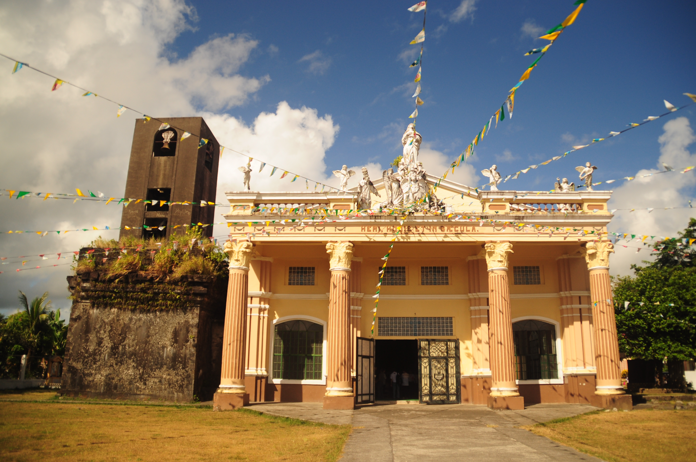

Sorsogon City
St. John the Baptist Parish (Bacon Church)
One of the finest examples of colonial ecclesiastical architecture in the province. Its restored coral stone facade and bell tower date to the 18th century, overlooking Sorsogon Bay.